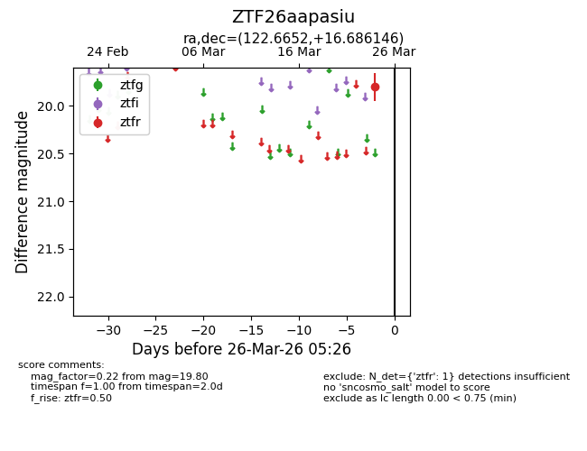
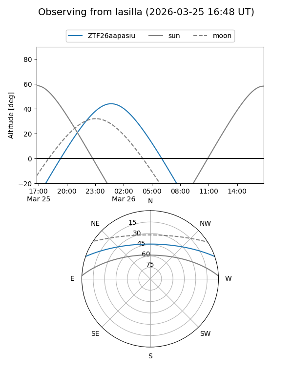
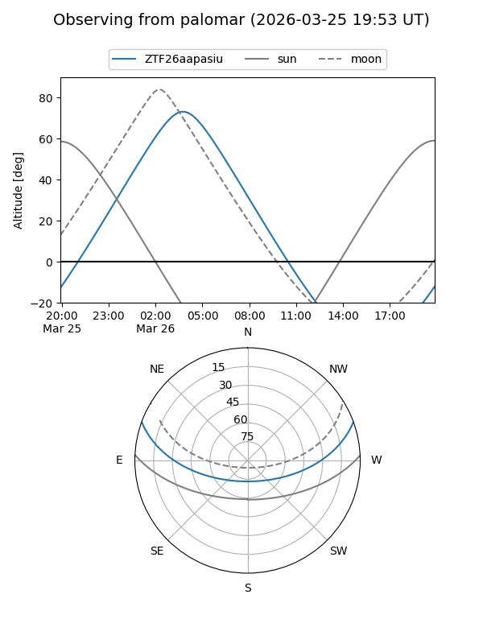

ZTF26aapasiu
Target ZTF26aapasiu at 2026-03-26 05:28
Aliases and brokers:
FINK: link
Lasair: link
ALeRCE: link
alt names
ZTF26aapasiu (ztf,fink_ztf)
Coordinates:
equatorial (ra, dec) = 122.6652,+16.68615
equatorial (HMS+DMS) = 08:10:39.65,+16:41:10.12
galactic (l, b) = (206.1269,+24.82098)
Flags:
Photometry:
last ztfr=19.80
1 ztfr detections
Lightcurve

Visibility


Additional plots